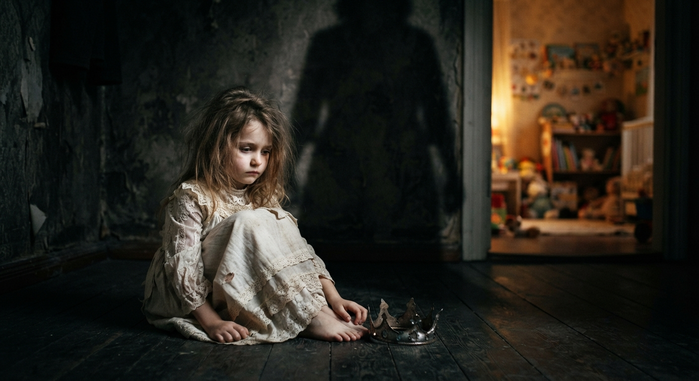

Daddy’s Princess? is a deeply personal reflection on childhood, rejection, and the wounds that can survive long after
childhood has ended.
The poem explores what happens when a child who was once cherished feels displaced, criticized, neglected, and forced to
grow up before she is ready. It speaks of the lasting effects of harsh parenting—the fear, self-doubt, and emotional
scars that can follow a person into adulthood.
Some childhood memories do not remain in childhood. They find their way into the way we see ourselves, the way we hear
certain voices, and the way we experience relationships later in life.
This poem is for the little girl who learned too early that love could become cruelty, and for the woman who still
carries her.
It is not a story about weakness. It is a testimony to survival.

Let me narrate a story.
There was a little child.
The father adored her like a princess
until their second child arrived.
Then he cast her out
like a fallen empress
throwing her from the cradle’s warmth
and setting fire to the small world she once called home.
Confused and overwhelmed
she wandered through a haze of harsh words
where every glance said she was a mistake best avoided.
Hitting and slapping followed
alongside sheer neglect
becoming her daily provision
as if she carried the weight
of their misfortune.
He tried to shove her into a time machine
demanding she grow up overnight
to need nothing, to feel nothing, to become an adult
while her small body still trembled.
Emotionally mangled and shaking
she was forced to walk
a long dim and lonely path.
Her growing up years were dark and melancholic.
The man she called daddy became something entirely.
He often hurled words sharp and vitriolic
using violence to release his inner hell.
She endured his diabolic storms in silence
until his fury finally ceased.
She still carries a damaged nose
a brutal reminder of his wrath.
When a math problem clouded her mind
he struck her face with a heavy notebook
until the white pages seemed to bleed red.
But the torment did not end with blows.
His cruelty grew further
Mocking her grades became his favorite game.
He invited guests to join the dark amusement
turning her flaws into weapons
and her shame into entertainment.
Today she is afraid of the very word man.
Her mind has registered their voices as loud and violent.
To her they are a hazard a menace a threat
leaving her world shattered fearful and silent.